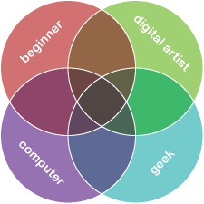

Illustrated with photos wot I ‘ave taken
This is a beginner’s guide for computer geeks who want to be digital artists. Specifically:

Roll over a section of the diagram
You are a beginner: you have little experience with photography beyond point-and-shoot cameras and mobile phones. If you are not a beginner then why are you reading this? Shoo! Go outside and play with your camera.
You want to be a digital artist: you intend to make a small number of photos or illustrations that are as close to perfection as you can get them.
If you want to take large numbers of shots to document weddings or sports events for example, then you won’t want to edit them all on a computer afterwards so you have to get everything perfect when you take the shot, just like in ye olden days of film photography. This guide may well help you, but ignore the section on digital manipulation. Then practice. A lot.
On the other hand if you don’t care about making each shot perfect then save yourself a lot of money and buy a point-and-shoot camera.
You have a computer and know how to use it. If you are reading this, I’m guessing that you do. If you are not reading this then something very strange is happening right now.
You are a geek: The fact that you’re reading this article already gave you a 90% chance of being a geek, and taking the time to roll over all these little bits guarantees it. If you think Venn diagrams are interesting, you’re a geek, end of story. I like to define a geek as someone who cares enough about something that they want to get good at it for their own sake, not to impress others or earn more (though being a geek helps you with those two goals too).
Moot point – all digital artists are computer geeks
You are a computer geek: you enjoy using computers and can learn a piece of software by playing with it for a day or two. If you are not a computer geek then it may be for the best to use a digital camera as if it was a film camera: forget digital retouching and just capture the best image you can when you shoot. This article will still be useful, but ignore the section on digital manipulation.
If all of the above apply, come on in!
Continue reading Bernie’s Better Beginner’s Guide to Photography for Computer Geeks Who Want to be Digital Artists